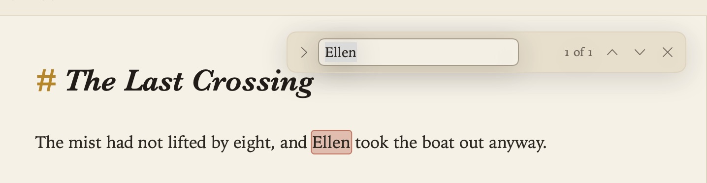
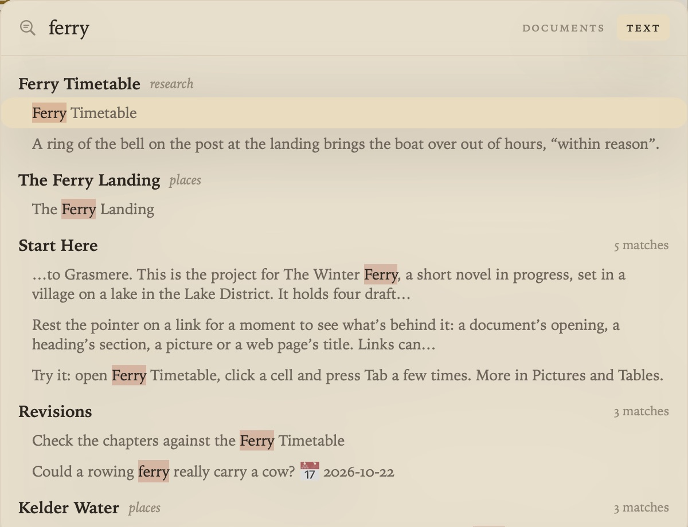
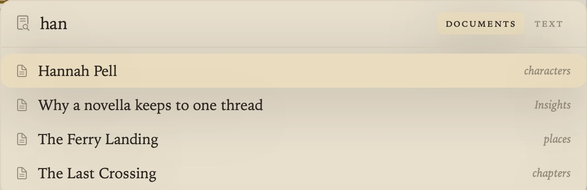
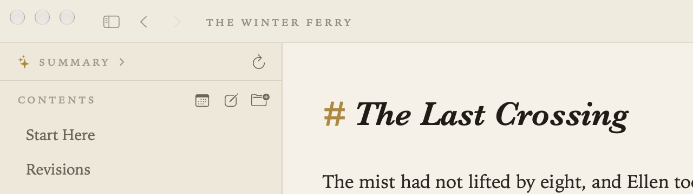

Find and Search
Three ways to find things: within the open document, across every document, and by a document’s name.
Find in a document (⌘F)
Edit ▸ Find ▸ Find (⌘F) opens a small find box at the top right of the page. Every match is tinted as you type, ignoring capitals and accents, and the box counts them (“3 of 12”).

- Return or ⌘G goes to the next match; ⇧Return or ⇧⌘G to the previous one. A match inside a folded section or a table is opened up on the way.
- ⌘E (Use Selection for Find) searches for the words you’ve selected.
- esc closes the box and selects the match you were on.
- ⌥⌘F (Find and Replace), or the arrow at the left of the box, adds a Replace field. Replace All is a single step for Undo.
The pane in split view has a find box of its own.
Search all documents (⇧⌘F)
Go ▸ Search All Documents (⇧⌘F) searches the text of every document in the project and shows each matching line. Choose a result to open its document, or ⌥-click one to open it beside the page.

Open Quickly (⌘O)
Go ▸ Open Quickly (⌘O) opens a document by name: type part of its title and press Return. Tab switches between Open Quickly and Search All Documents, so you can start with one and change your mind.

Going back
Go ▸ Back (⌘[) and Forward (⌘]) step through the documents you’ve opened, as in a browser. A mouse’s side buttons and a two-finger swipe on the trackpad do the same.

Other ways in
- The Index (⇧⌘L) shows every document as a card, and how they connect.
- The Margin lists the documents that link to the open one.
- Go ▸ Tasks (⇧⌘T) gathers every task. See Tasks and Due Dates.
- Project ▸ Ask Your Documents (⇧⌘A) answers a question from your documents. See Ask Your Documents and AI.

Folders you’ve chosen in Project ▸ Ignored Folders are left out of every search.